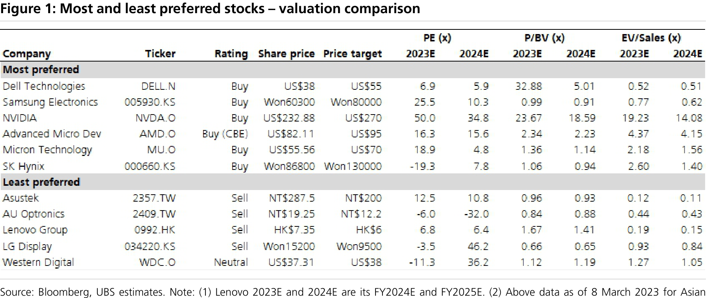
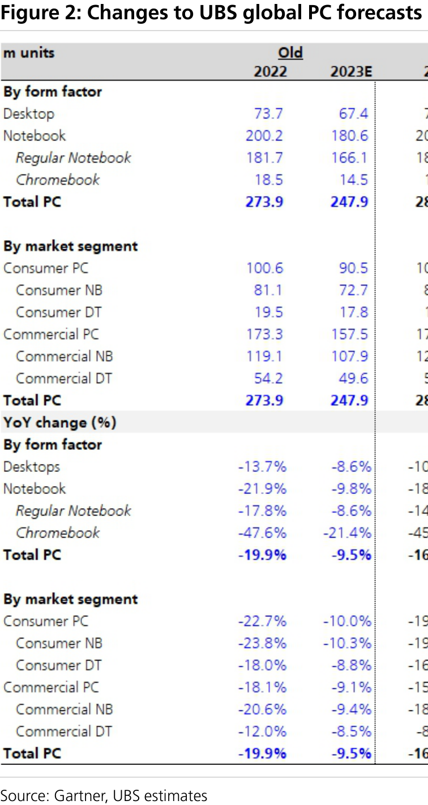
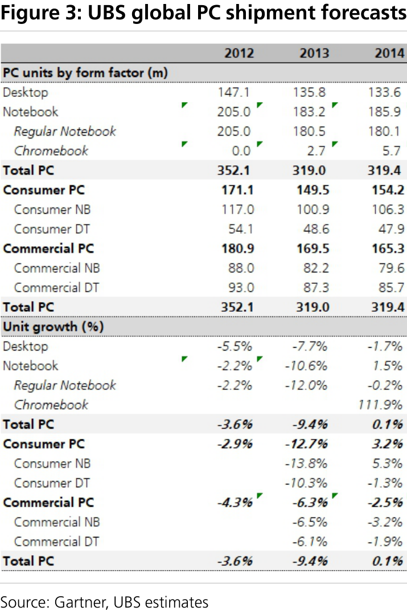
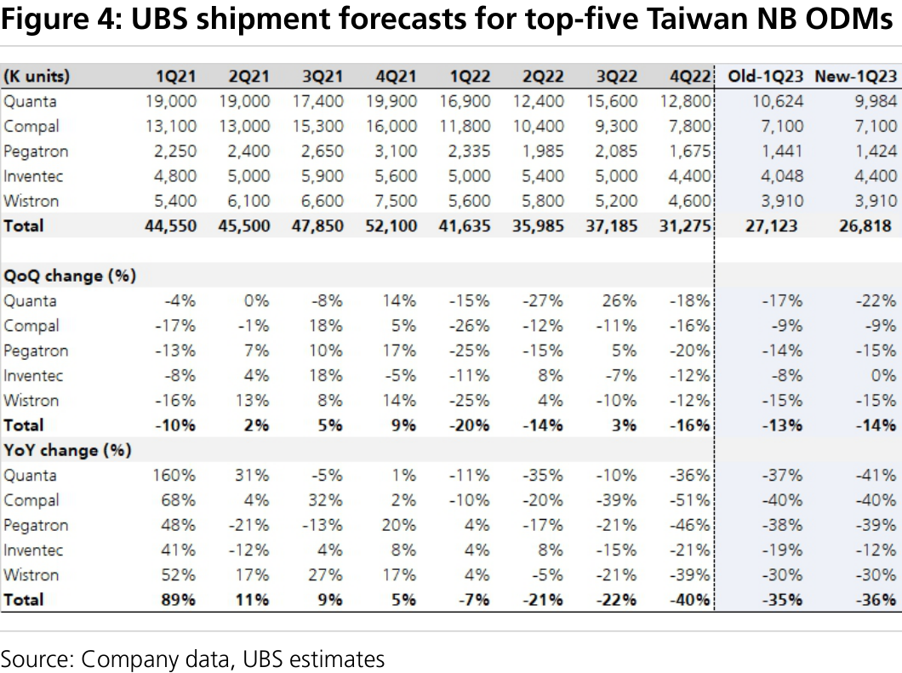

a b
UBS Global I/O: Global PC Hardware Global PC shipments: expecting a 12% decline in 2023 with a return to positive growth in Q423
Global PC shipments – returning to growth in Q423
Gartner reported global PC shipments declined 16.9% YoY in 2022, milder than our prior estimate of a 19.9% YoY decline. In this note, we adjust our 2022 global PC shipments figure to reflect the Gartner results and now forecast 2023E global PC shipments to fall 12.4% YoY to 248.9m units. We also introduce our 2024E global PC shipments forecast, calling for a 1.4% YoY increase to 252.3m units. On a quarterly basis, we believe global PC shipments growth bottomed with a 31% YoY decline in Q422, and should begin to show narrowing YoY declines in subsequent quarters before returning to positive growth of 10% in Q423E. On a sequential basis, we expect global PC shipments growth to bottom in Q123E, with a 10% QoQ decline (or 28% YoY decline) and remain flattish QoQ in Q223E, before a demand recovery kicks in from H223. We expect channel inventory to return to a normal level by the end of Q223.
Notebook ODMs – key is recovery from Q223
We fine-tune our notebook (NB) original design manufacturer (ODM) forecasts and now project shipments from the top five NB ODMs to decline 13.8% YoY in 2023E vs. a 13.7%YoY decline in our prior forecast as we expect a slightly lower trough in Q123. We believe Quanta's likely Macbook order share loss to Hon Hai in 2023 will also lead to lower NB ODM shipments. If we add back Quanta's potential Macbook share loss for an apples-to-apples comparison, we forecast shipments from the top five NB ODMs to decline 11% YoY in 2023E, which is more in line with our global PC shipments forecast. Nonetheless, our forecasts imply a strong recovery starting from Q223. On a sequential basis, we now assume NB ODM shipments would decline 14% QoQ (down 36% YoY) in Q123E, and rise 7% QoQ (down 20% YoY) in Q223E, 17% QoQ (down 10% YoY) in Q323E and another 10% QoQ (up 18% YoY) in Q423E. Our ODM forecasts also show a return to positive growth in Q423.
Mixed signals from PC supply chain
Overall we saw mixed signals from the PC supply chain in an uncertain business climate. consumer PC survey in February showed improved consumer sentiment and some IC design companies recently saw rush orders. On the other hand, several NB ODMs have turned even more cautious on the 2023 outlook, posting softer- than-expected January shipments.
Our most and least preferred stocks
Both our global PC shipments forecast and NB ODM forecast point to a return to positive growth in Q423; the key question is how strong will the demand recovery be in H223. Our current global PC shipments and NB ODM shipments forecasts for 2023 imply a strong demand recovery in H223. Thus, there could still be downside if the demand recovery in H223 is below seasonal strength. In the global PC supply chain, our most preferred stocks are Dell, Samsung, Nvidia, AMD, Micron, and SK Hynix. Our least preferred stocks are AU Optronics, LG Display, Lenovo, Asustek, and Western Digital.
Global Research and Evidence Lab
Equities
Global
Technology
====================================================================================================
UBS Global I/O: Global PC Hardware
companies and as of 7 March 2023 for US companies.
Fine-tuning our global PC forecast but remain cautious on H223
We fine-tune 2023E global PC shipments, including Chromebooks, raising our forecast by 0.4% to 248.9m units to account for better full-year 2022 results. According to our conversations with companies in the PC supply chain, we see OEMs adopting aggressive channel clearing procedures, with ODMs reporting worse shipments in January than in December, and therefore expect a deeper trough in Q123, resulting in a lower base and a 12.4% YoY decline in shipments for 2023E. As for seasonality, we expect a deeper trough, down 10% QoQ in Q123E, before a gradual revival, up 2% QoQ in Q223E.
Off a higher full-year 2022 base, we now forecast commercial PC shipments to decline 10.6% YoY to 159.8m units in 2023E (vs. our prior forecasts of a 9.1% YoY decline) to reflect widespread cost-cutting among corporates. We model Chromebook shipments to decline 16.9% YoY in 2023E as we continue to expect Chromebook will suffer the most from channel clearing as OEMs lower prices on regular NBs. Meanwhile, we expect consumer PC shipments will decline 15.4% YoY to 89.1m units in 2023E (vs. our prior forecasts of a 10.0% YoY decline).
We are confident the PC market will trough in Q123 with improving consumer sentiment from our survey and ODMs' positive QoQ guidance for Q223. Some OEMs are targeting to finish destocking in Q123, providing an additional point of reference for the current demand drought and oversupply in the PC market to end in Q123. However, the scale of the resumption of growth remains unclear, as the signals are mixed from this uncertain PC market. Several ODMs have turned even more cautious on the 2023 outlook after they posted softer-than-expected January shipments. We remain cautious on the PC market and would need more proof to develop a stronger conviction in the recovery story.
UBS Research
Figure 1: Most and least preferred stocks – valuation comparison
====================================================================================================
Figure 2: Changes to UBS global PC forecasts
Figure 3: UBS global PC shipment forecasts
====================================================================================================
NB ODMs: Q123 setting trough
We fine-tune our NB ODM forecast again and now project shipments by the top five NB ODMs to decline 13.8% YoY in 2023E vs. our prior forecast of a 13.7% YoY decline as we expect a slightly lower trough in Q123. We believe Quanta's Macbook share loss to Hon Hai in 2023 will also lead to lower NB ODM shipments. If we add back Quanta's Macbook shipment share for an apples-to-apples comparison, we estimate ODM shipments by the top five NB ODMs would decline 11% YoY in 2023E. Nonetheless, our forecasts imply a strong recovery starting from Q223. On a sequential basis, we now assume Q123E ODM shipments will decline 14% QoQ (down 36% YoY) in Q123E, before rising by 7% QoQ (down 20% YoY) in Q223E, 17% QoQ (down 10% YoY) in Q323E and 10% QoQ ( up 18% YoY) in Q423E. Our ODM forecasts also show a return to positive growth in Q423E.
Figure 4: UBS shipment forecasts for top-five Taiwan NB ODMs
====================================================================================================
Valuation Method and Risk Statement
====================================================================================================